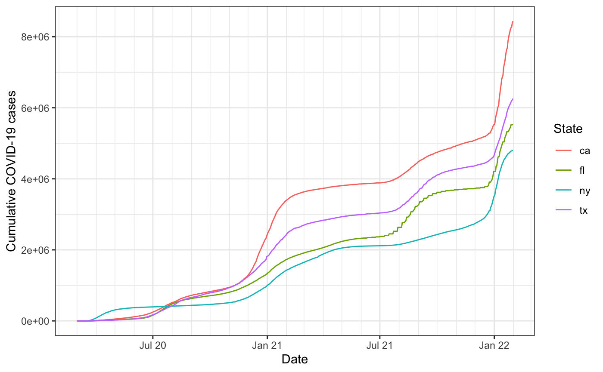
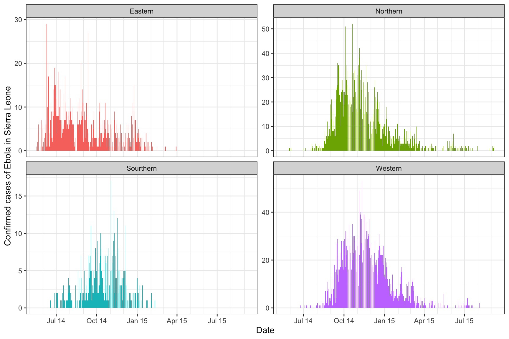

This package introduces a common data structure for epidemiological data sets measured over space and time, and offers associated utilities to perform basic signal processing tasks.
Installing
This package is not on CRAN yet, so it can be installed using the devtools package:
devtools::install_github("cmu-delphi/epiprocess", ref = "main")
Building the vignettes, such as this getting started guide, takes a significant amount of time. They are not included in the package by default. If you want to include vignettes, then use this modified command:
devtools::install_github("cmu-delphi/epiprocess", ref = "main", build_vignettes = TRUE, dependencies = TRUE)
Getting data into epi_df format
We’ll start by showing how to get data into epi_df format, which is just a tibble with a bit of special structure, and is the format assumed by all of the functions in the epiprocess package. An epi_df object has (at least) the following columns:
-
geo_value: the geographic value associated with each row of measurements. -
time_value: the time value associated with each row of measurements.
It can have any number of other columns which can serve as measured variables, which we also broadly refer to as signal variables. The documentation for gives more details about this data format.
A data frame or tibble that has geo_value and time_value columns can be converted into an epi_df object, using the function as_epi_df(). As an example, we’ll work with daily cumulative COVID-19 cases from four U.S. states: CA, FL, NY, and TX, over time span from mid 2020 to early 2022, and we’ll use the covidcast package to fetch this data from the COVIDcast API.
library(covidcast) library(epiprocess) library(dplyr) cases <- covidcast_signal(data_source = "jhu-csse", signal = "confirmed_cumulative_num", start_day = "2020-03-01", end_day = "2022-01-31", geo_type = "state", geo_values = c("ca", "fl", "ny", "tx")) colnames(cases)
## [1] "data_source" "signal" "geo_value"
## [4] "time_value" "source" "geo_type"
## [7] "time_type" "issue" "lag"
## [10] "missing_value" "missing_stderr" "missing_sample_size"
## [13] "value" "stderr" "sample_size"As we can see, a data frame returned by covidcast::covidcast_signal() has the columns required for an epi_df object (along with many others). We can use as_epi_df(), with specification of some relevant metadata, to bring the data frame into epi_df format.
x <- as_epi_df(cases, geo_type = "state", time_type = "day", as_of = max(cases$issue)) %>% select(geo_value, time_value, total_cases = value) class(x)
## [1] "epi_df" "tbl_df" "tbl" "data.frame"summary(x)
## An `epi_df` x, with metadata:
## * geo_type = state
## * time_type = day
## * as_of = 2022-02-19
## ----------
## * min time value = 2020-03-01
## * max time value = 2022-01-31
## * average rows per time value = 4head(x)
## # A tibble: 6 × 3
## geo_value time_value total_cases
## <chr> <date> <dbl>
## 1 ca 2020-03-01 19
## 2 fl 2020-03-01 0
## 3 ny 2020-03-01 0
## 4 tx 2020-03-01 0
## 5 ca 2020-03-02 23
## 6 fl 2020-03-02 1attributes(x)$metadata
## $geo_type
## [1] "state"
##
## $time_type
## [1] "day"
##
## $as_of
## [1] "2022-02-19"Some details on metadata
In general, an epi_df object has the following fields in its metadata:
-
geo_type: the type for the geo values. -
time_type: the type for the time values. -
as_of: the time value at which the given data were available.
Metadata for an epi_df object x can be accessed (and altered) via attributes(x)$metadata. The first two fields here, geo_type and time_type, are not currently used by any downstream functions in the epiprocess package, and serve only as useful bits of information to convey about the data set at hand. The last field here, as_of, is one of the most unique aspects of an epi_df object.
In brief, we can think of an epi_df object as a single snapshot of a data set that contains the most up-to-date values of some signals of interest, as of the time specified as_of. For example, if as_of is January 31, 2022, then the epi_df object has the most up-to-date version of the data available as of January 31, 2022. The epiprocess package also provides a companion data structure called epi_archive, which stores the full version history of a given data set. See the archive vignette for more.
If any of the geo_type, time_type, or as_of arguments are missing in a call to as_epi_df(), then this function will try to infer them from the passed object. Usually, geo_type and time_type can be inferred from the geo_value and time_value columns, respectively, but inferring the as_of field is not as easy. See the documentation for as_epi_df() more details.
x <- as_epi_df(cases) %>% select(geo_value, time_value, total_cases = value) attributes(x)$metadata
## $geo_type
## [1] "state"
##
## $time_type
## [1] "day"
##
## $as_of
## [1] "2022-02-19"
Working with epi_df objects downstream
Data in epi_df format should be easy to work with downstream, since it is a very standard tabular data format; in the other vignettes, we’ll walk through some basic signal processing tasks using functions provided in the epiprocess package. Of course, we can also write custom code for other downstream uses, like plotting, which is pretty easy to do ggplot2.
library(ggplot2) theme_set(theme_bw()) ggplot(x, aes(x = time_value, y = total_cases, color = geo_value)) + geom_line() + scale_x_date(minor_breaks = "month", date_labels = "%b %y") + labs(x = "Date", y = "Cumulative COVID-19 cases", color = "State")

As a last couple examples, we’ll look at some more data sets just to show how we might get them into epi_df format. Data on daily new (not cumulative) SARS cases in Canada in 2003, from the outbreaks package:
x <- outbreaks::sars_canada_2003 %>% mutate(geo_value = "ca") %>% select(geo_value, time_value = date, starts_with("cases")) %>% as_epi_df(geo_type = "nation") head(x)
## # A tibble: 6 × 6
## geo_value time_value cases_travel cases_household cases_healthcare cases_other
## <chr> <date> <int> <int> <int> <int>
## 1 ca 2003-02-23 1 0 0 0
## 2 ca 2003-02-24 0 0 0 0
## 3 ca 2003-02-25 0 0 0 0
## 4 ca 2003-02-26 0 1 0 0
## 5 ca 2003-02-27 0 0 0 0
## 6 ca 2003-02-28 1 0 0 0library(tidyr) x <- x %>% pivot_longer(starts_with("cases"), names_to = "type") %>% mutate(type = substring(type, 7)) yrange <- range(x %>% group_by(time_value) %>% summarize(value = sum(value)) %>% pull(value)) ggplot(x, aes(x = time_value, y = value)) + geom_col(aes(fill = type)) + scale_x_date(minor_breaks = "month", date_labels = "%b %y") + scale_y_continuous(breaks = yrange[1]:yrange[2]) + labs(x = "Date", y = "SARS cases in Canada", fill = "Type")

Data on new cases of Ebola in Sierra Leone in 2014, from the same package:
x <- outbreaks::ebola_sierraleone_2014 %>% mutate( cases = ifelse(status == "confirmed", 1, 0), province = case_when( district %in% c("Kailahun", "Kenema", "Kono") ~ "Eastern", district %in% c("Bombali", "Kambia", "Koinadugu", "Port Loko", "Tonkolili") ~ "Northern", district %in% c("Bo", "Bonthe", "Moyamba", "Pujehun") ~ "Sourthern", district %in% c("Western Rural", "Western Urban") ~ "Western")) %>% select(geo_value = province, time_value = date_of_onset, cases) %>% filter(cases==1) %>% group_by(geo_value, time_value) %>% summarise(cases = sum(cases)) %>% as_epi_df(geo_type="province") ggplot(x, aes(x = time_value, y = cases)) + geom_col(aes(fill = geo_value), show.legend = FALSE) + facet_wrap(~ geo_value, scales = "free_y") + scale_x_date(minor_breaks = "month", date_labels = "%b %y") + labs(x = "Date", y = "Confirmed cases of Ebola in Sierra Leone")
